Windows 11 wireless setup
-
Search for "Control Panel" and open it
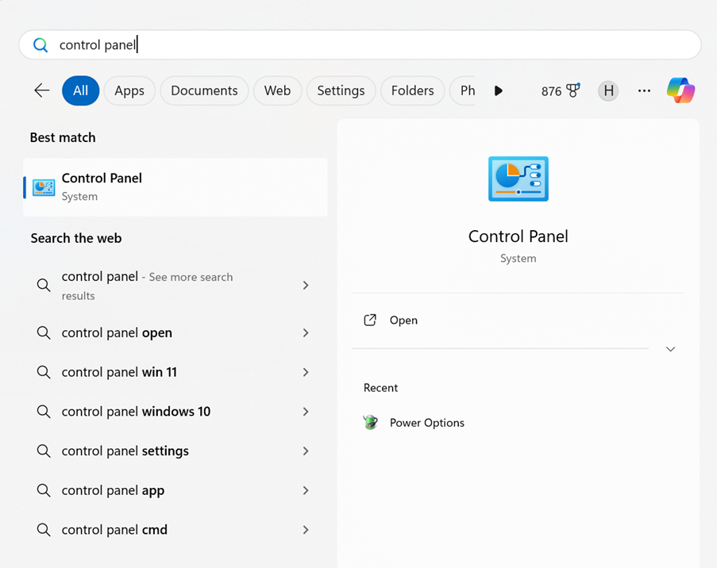
-
Select "Network and Internet"
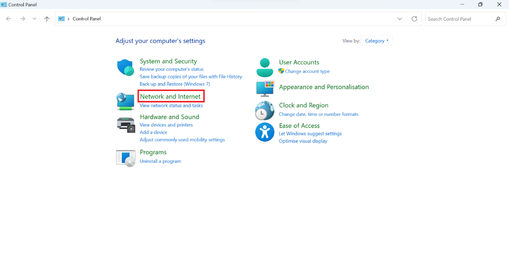
-
Select "Network and Sharing Centre" (Hálózati és megosztási központ)
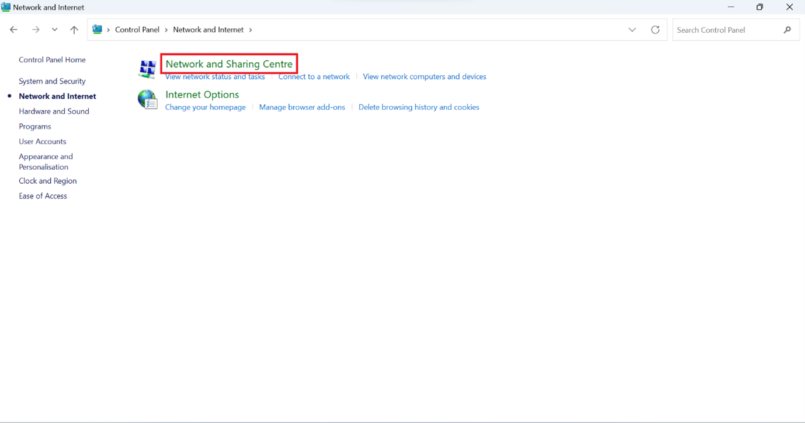
-
Open "Set up a new connection or network"
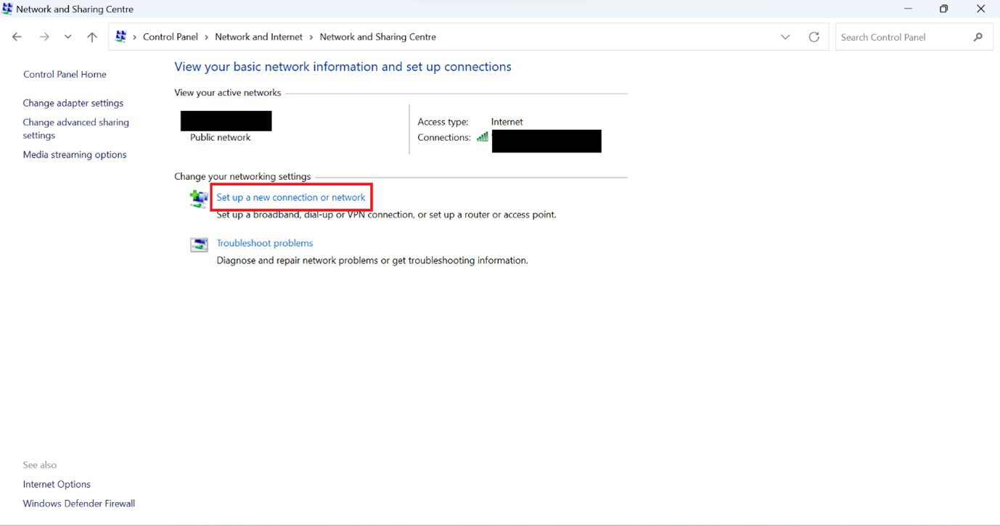
-
Double-click on "Manually connect to a wireless network"
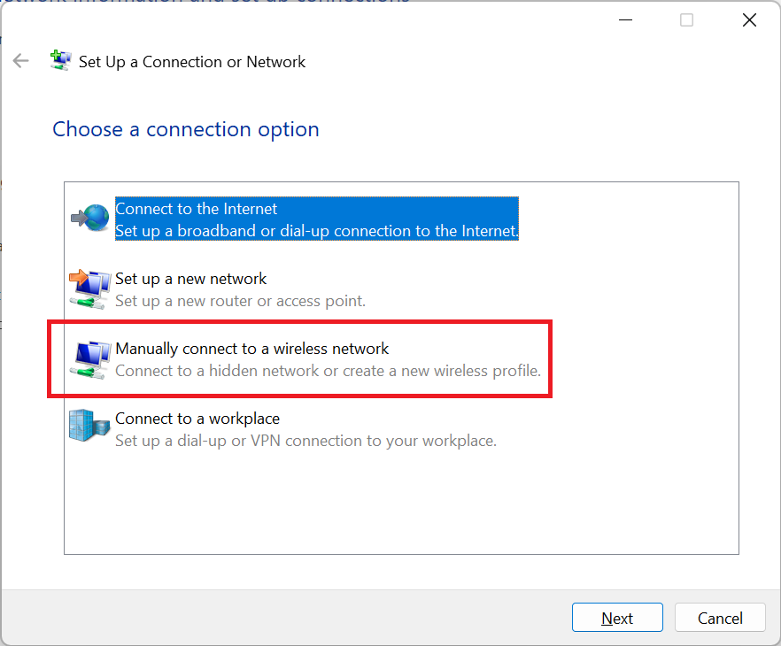
-
Enter the wifi network’s name (ejcwifi_radius) and set the Security type to "WPA2-Enterprise"
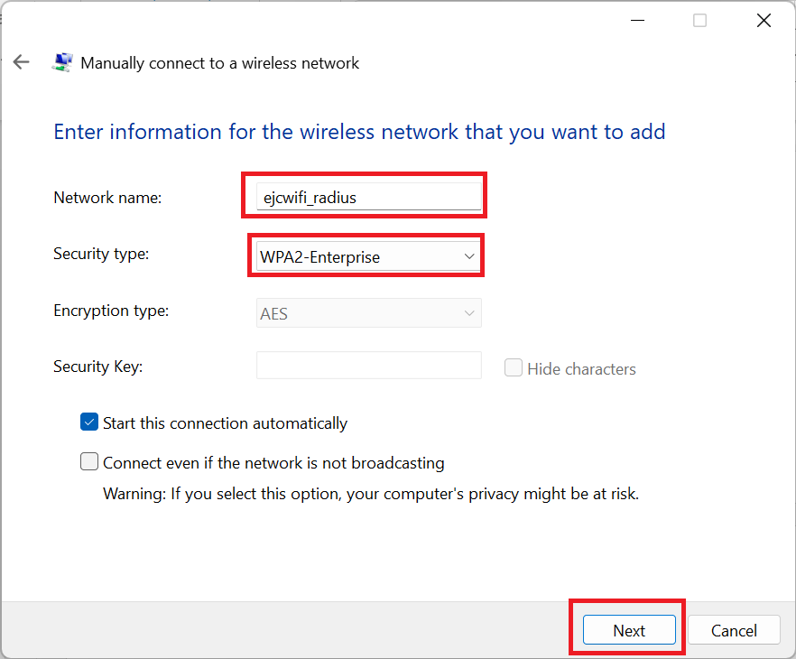
-
Click on "Change connection settings"
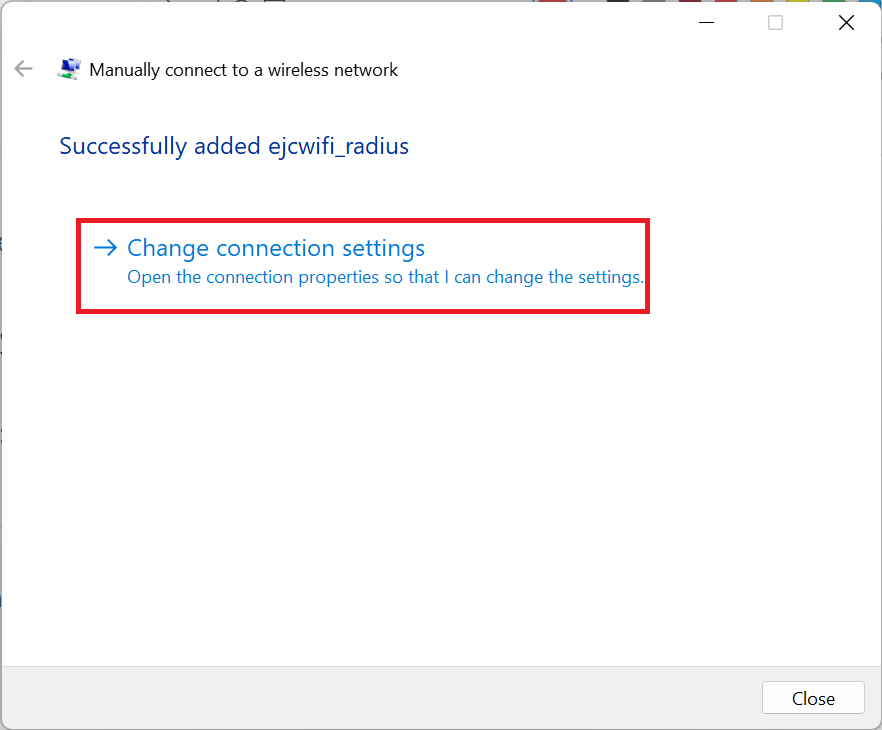
-
Click on "Security"

-
Click on "Settings" near to "Microsoft: Protected EAP (PEAP)"
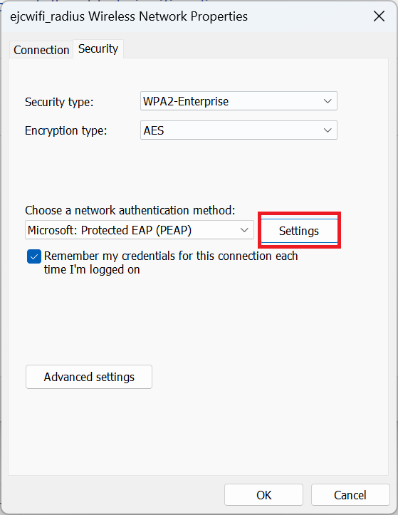
-
Select "Configure...":
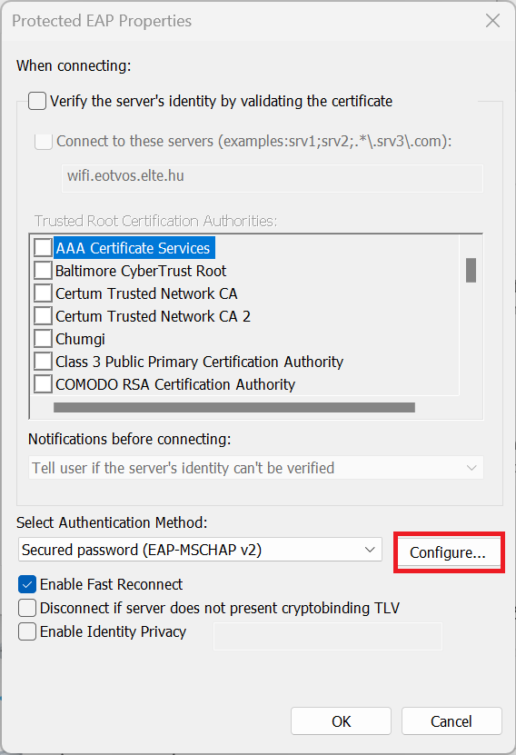
-
If checked, uncheck "Automatically use my Windows log-on name and password (and domain if any)" and then
click "OK":
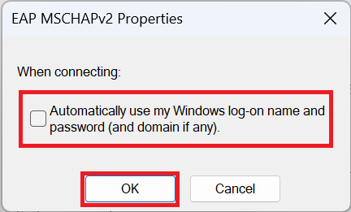
-
You have two options:
-
Validate the servers identity:
If you want to validate it, select "Connect to these servers", and enter wifi.eotvos.elte.hu to the
appropriate field, and then click "Ok".
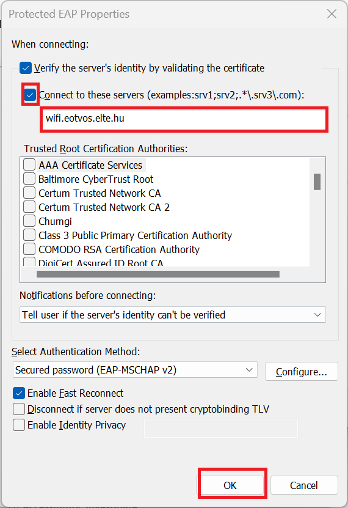
-
Do not validate the servers identity
If you don’t want to validate the server’s identity, click deselect "Verify the server’s identity by
validating the certificate" and then click "OK":
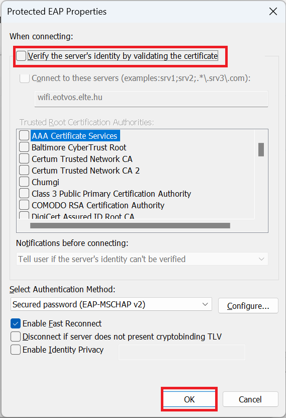
-
Click "Advanced Settings":

-
Check "Specify authentication mode", and select "User authentication", and click "OK".
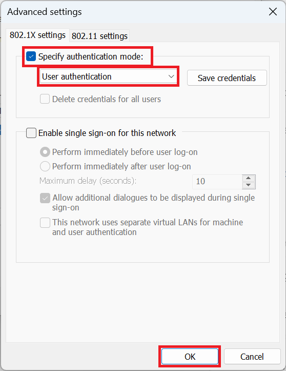
-
Click "Ok":
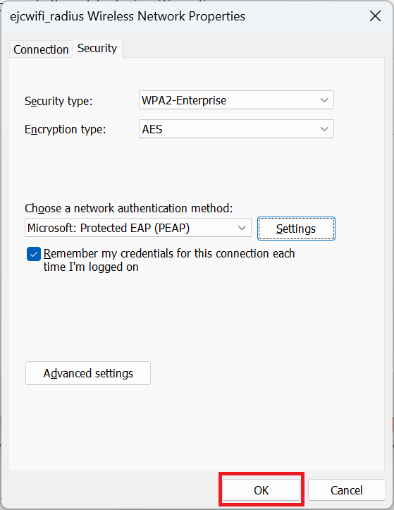
-
Click "Close":
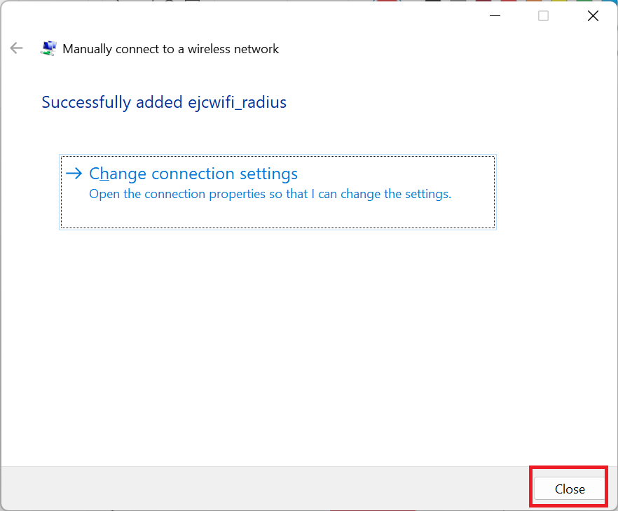
-
Close Control Panel:
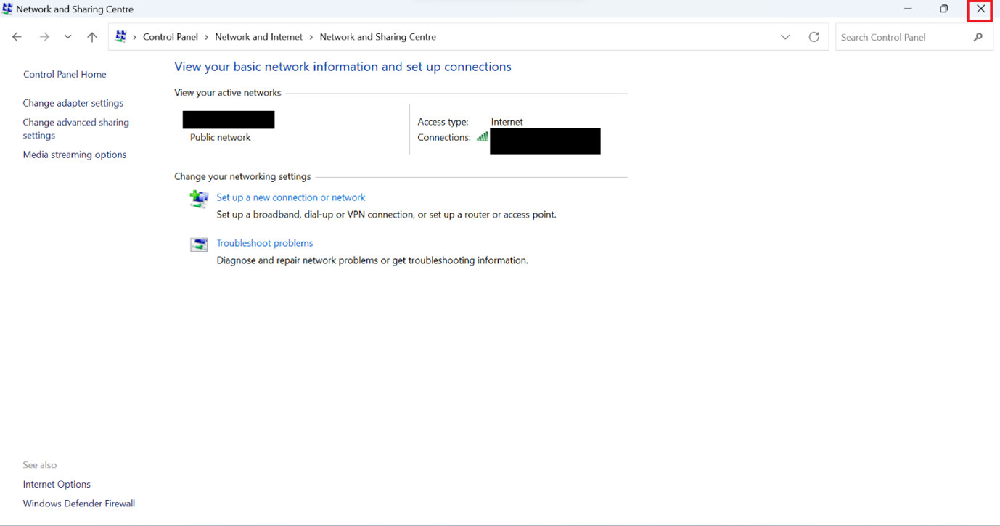
-
Once you are in the range of the WiFi network, open up where you can connect to WiFi networks, and select
ejcwifi_radius, connect to it, you will be prompted to enter your username and password. That information is
available once you have logged in to the website (uran.eotvos.elte.hu).